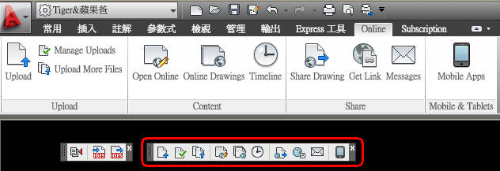
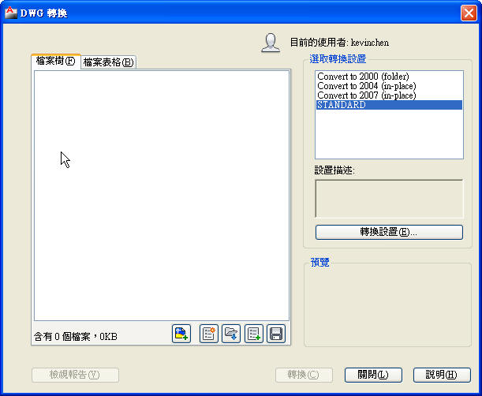

Autodesk® Subscription Advantage Pack for AutoCAD® 2011產品將 AutoCAD® 軟體延伸至網路與行動平台，並且提供轉換與共用 DWG™ 和 IGES 檔案的新工具，有助於強化協同合作。
重要功能包括：
1、AutoCAD 軟體的 AutoCAD® WS 外掛程式—在網頁瀏覽器或行動裝置順暢無礙檢視、編輯與共用 DWG 檔案。

補充：AutoCAD 軟體的 AutoCAD WS 外掛程式可供所有 AutoCAD 客戶使用，而且不限於 AutoCAD Subscription戶合約客戶。

2、DWG 轉換工具—批次轉換 DWG 檔案，輕鬆與使用舊版軟體的同事共用較新的圖面，或是迅速更新較舊的檔案庫。

3、IGES 匯入/匯出—將 IGES 圖檔匯入與匯出，與客戶、同事和合作夥伴共用 3D 內容。

說明：AutoCAD 2011的Subscription Advantage Pack功能加值包之Import from IGES &Export to IGES
http://autocad.bestoforum.net/forum-f44/topic-t8125.htm
Subscription Advantage Pack 短片：
繼續閱讀：
[分享]免費 AutoCAD WS網路版CAD繪圖軟體、DWG閱讀器http://autocad.bestoforum.net/forum-f25/topic-t8100.htm